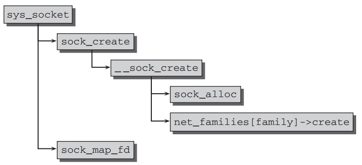
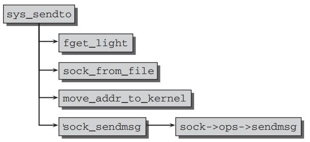

Application Layer
Table of Contents
Application Layer
Sockets同样贯彻Unix的所有都是文件的理念到网络连接中.在kernel与用户层 socket间的接口通过在C标准库使用socketcall的系统调用.
socketcall好比个分路器来处理不同的流程,比如打开,绑定或发送数据.
Linux采用尽可能简单的kernel中socket与用户层socket通信的概念.每个程序的每个socket都有一阿 socket 结构实例 和 sock 结构实例. 它们分别被用来作为往内核层和往用户层的接口.
Socket Data Structures
socket 的结构如下:
// <net.h> struct socket { socket_state state; unsigned long flags; const struct proto_ops *ops; struct file *file; struct sock *sk; short type; };
- type指示协议的类型.
- state指示socket的连接状态,如下值:
typedef enum { SS_FREE = 0, /* not allocated */ SS_UNCONNECTED, /* unconnected to any socket */ SS_CONNECTING, /* in process of connecting */ SS_CONNECTED, /* connected to socket */ SS_DISCONNECTING /* in process of disconnecting */ } socket_state;
- file是指向通过socket通信的虚拟文件实现.
socket没有被执行协议绑定.所以 proto_ops 被使用来指向特定协议函数处理.
// <net.h> struct proto_ops { int family; struct module *owner; int (*release) (struct socket *sock); int (*bind) (struct socket *sock, struct sockaddr *myaddr, int sockaddr_len); int (*connect) (struct socket *sock, struct sockaddr *vaddr, int sockaddr_len, int flags); int (*socketpair)(struct socket *sock1, struct socket *sock2); int (*accept) (struct socket *sock, struct socket *newsock, int flags); int (*getname) (struct socket *sock, struct sockaddr *addr, int *sockaddr_len, int peer); unsigned int (*poll) (struct file *file, struct socket *sock, struct poll_table_struct *wait); int (*ioctl) (struct socket *sock, unsigned int cmd, unsigned long arg); int (*compat_ioctl) (struct socket *sock, unsigned int cmd, unsigned long arg); int (*listen) (struct socket *sock, int len); int (*shutdown) (struct socket *sock, int flags); int (*setsockopt)(struct socket *sock, int level, int optname, char __user *optval, unsigned int optlen); int (*getsockopt)(struct socket *sock, int level, int optname, char __user *optval, int __user *optlen); int (*compat_setsockopt)(struct socket *sock, int level, int optname, char __user *optval, unsigned int optlen); int (*compat_getsockopt)(struct socket *sock, int level, int optname, char __user *optval, int __user *optlen); int (*sendmsg) (struct kiocb *iocb, struct socket *sock, struct msghdr *m, size_t total_len); int (*recvmsg) (struct kiocb *iocb, struct socket *sock, struct msghdr *m, size_t total_len, int flags); int (*mmap) (struct file *file, struct socket *sock, struct vm_area_struct * vma); ssize_t (*sendpage) (struct socket *sock, struct page *page, int offset, size_t size, int flags); ssize_t (*splice_read)(struct socket *sock, loff_t *ppos, struct pipe_inode_info *pipe, size_t len, unsigned int flags); };
sock 指针也被包含在此结构中,用来指向拥有kernel的socket处理的较长结构.这个结构包含有很多难得使用的元素.它最重要的元素是结构 sock_common.它的部分代码如下:
// include/net/sock.h struct sock_common { unsigned short skc_family; volatile unsigned char skc_state; struct hlist_node skc_node; unsigned int skc_hash; atomic_t skc_refcnt; struct proto *skc_prot; }; struct sock { struct sock_common __sk_common; struct sk_buff_head sk_receive_queue; struct sk_buff_head sk_write_queue; struct timer_list sk_timer; void (*sk_data_ready)(struct sock *sk, int bytes); ... };
系统的sock结构以协议特定hash表形式组织. skc_node 是hash连接元素,而
skc_hash 表示hash值.
数据被发送和接受,通过把她们放入等待队列( sk_receive_queue 和
sk_write_queue).
还有一堆与sock结构相关的回调函数被kernel使用来处理特殊时间或状态改变.这里只列出 sk_data_ready 指针,因为它是最后意义并且在前几节已经提到过很多次.这个函数当需要用户层处理到达数据时被调用.通常,它指向
sock_def_readable 函数.
socket 结构中的 struct proto_ops 与 sock 中的 struct proto 之间会有一定的混淆.后者的定义如下:
// include/net/sock.h struct proto { void (*close)(struct sock *sk, long timeout); int (*connect)(struct sock *sk, struct sockaddr *uaddr, int addr_len); int (*disconnect)(struct sock *sk, int flags); struct sock * (*accept) (struct sock *sk, int flags, int *err); int (*ioctl)(struct sock *sk, int cmd, unsigned long arg); int (*init)(struct sock *sk); void (*destroy)(struct sock *sk); void (*shutdown)(struct sock *sk, int how); int (*setsockopt)(struct sock *sk, int level, int optname, char __user *optval, unsigned int optlen); int (*getsockopt)(struct sock *sk, int level, int optname, char __user *optval, int __user *option); ... int (*sendmsg)(struct kiocb *iocb, struct sock *sk, struct msghdr *msg, size_t len); int (*recvmsg)(struct kiocb *iocb, struct sock *sk, struct msghdr *msg, size_t len, int noblock, int flags, int *addr_len); int (*sendpage)(struct sock *sk, struct page *page, int offset, size_t size, int flags); int (*bind)(struct sock *sk, struct sockaddr *uaddr, int addr_len); ... };
两者结构都有类似名字的成员,尽管表示不同的函数.sock中的被用来在socket层与transport层通信使用.而socket中的函数指针被设计用来与system calls通信.也就是形成用户层与kernel端的连接.
Sockets and Files
一旦连接建立,用户层进程可以使用通常的文件操作来使用sockets.kernel中是怎么实现的呢?因为VFS层的结构,很少操作需要.
虚拟文件系统的VFS inodes 这里暂时不具体讨论,只看相关部分.每个socket都有一个这样类型的inode, 它帮助其他结构与普通文件相关联.处理文件的函数被存储在另外的指针表中:
// <fs.h> struct inode { ... struct file_operations *i_fop; /* former ->i_op->default_file_ops */ ... }
因此,对socket文件描述符的操作能透明的转向到网络层的代码. Sockets使用如下文件操作表:
static const struct file_operations socket_file_ops = { .owner = THIS_MODULE, .llseek = no_llseek, .aio_read = sock_aio_read, .aio_write = sock_aio_write, .poll = sock_poll, .unlocked_ioctl = sock_ioctl, #ifdef CONFIG_COMPAT .compat_ioctl = compat_sock_ioctl, #endif .mmap = sock_mmap, .open = sock_no_open, /* special open code to disallow open via /proc */ .release = sock_close, .fasync = sock_fasync, .sendpage = sock_sendpage, .splice_write = generic_splice_sendpage, .splice_read = sock_splice_read, };
sock_ 类的函数是简单的封装,用来调用 sock_operations 函数,以
sock_mmap 为例:
// net/socket.c static int sock_mmap(struct file * file, struct vm_area_struct * vma) { struct socket *sock = file->private_data; return sock->ops->mmap(file, sock, vma); }
Inode和socket通过在内存中一起来得到连在一起,通过如下的辅助结构:
// include/net/sock.h struct socket_alloc { struct socket socket; struct inode vfs_inode; };
kernel同时提供2个宏来进行必须的从inode转到相应的socket实例( SOCKET_I
), 和相反的 ( SOCK_INODE ). 为了更进一步简化, 当一个socket与文件相关联时, sock_attach_fd 设置 struct file 元素的 private_data 指向
socket 实例.
socketcall System Call
部分socket的操作可以通过文件操作来完成,但是其他一些操作不能,比如创建 socket,bind或listen操作.
为了此目的,Linux提供socketcall系统调用,在 sys_socketcall 中实现.
所有17个socket的操作在同一个系统调用函数中.这导致不同任务输入不同参数.
系统调用的第一个参数是数字定值来选择想要的调用.可能的值,如,
SYS_SOCKET, SYS_BIND, 和 SYS_RECV.标准库函数使用相同的名字都到达内部的 socketcall 并带有相应的参数.
sys_socketcall 的任务不是那么难,仅仅一个分路器来把系统调用转到其他函数.如下:
// net/socket.c asmlinkage long sys_socketcall(int call, unsigned long __user *args) { unsigned long a[6]; unsigned long a0, a1; int err; unsigned int len; if (call < 1 || call > SYS_ACCEPT4) return -EINVAL; len = nargs[call]; if (len > sizeof(a)) return -EINVAL; /* copy_from_user should be SMP safe. */ if (copy_from_user(a, args, len)) return -EFAULT; a0 = a[0]; a1 = a[1]; switch (call) { case SYS_SOCKET: err = sys_socket(a0, a1, a[2]); break; case SYS_BIND: err = sys_bind(a0, (struct sockaddr __user *)a1, a[2]); break; // ... case SYS_SEND: err = sys_send(a0, (void __user *)a1, a[2], a[3]); case SYS_RECV: err = sys_recv(a0, (void __user *)a1, a[2], a[3]); break; } return err; }
各个相关的系统调用如下:
sys_socket Creates a new socket.
sys_bind Binds an address to a socket.
sys_connect Connects a socket with a server.
sys_listen Opens a passive connection to lis
sys_accept Accepts an incoming connection
sys_getsockname Returns the address of the socket
sys_getpeername Returns the address of the comm
sys_socketpair Creates a socket pair that can be used immediately for
bidireational communication (both sockets are on the same system).
sys_send Sends data via an existing connec
sys_sendto Sends data to an explicitly specifie
sys_recv Receives data.
sys_recvfrom Receives data from a datagram socket and returns the source address at the
same time.
sys_shutdown Closes the connection.
sys_setsockopt Returns information on the socke
sys_getsockopt Sets socket options.
sys_sendmsg Sends messages in BSD style.
sys_recvmsg Receives messages in BSD style.
Creating Sockets
sys_socket 是创建一个新的socket的起始点.相应的代码流程如下:

首先,新的socket数据结构被创建是使用 sock_create, 它直接调用
__sock_create. struct socket 实例和 inde 实例的内存空间都在
sock_alloc 中分配.使得这两个元素能结合在一起.
kernel中transport协议被组织在数组 static struct net_proto_family
*net_families[NPROTO] 中,它被定义在 net/socket.c, 并通过
sock_register 来注册新的条目到此表中.其中提供协议特定初始函数的成员:
// net.h struct net_proto_family { int family; int (*create)(struct net *net, struct socket *sock, int protocol); struct module *owner; };
在socket内存分配完后,就是这个 create 函数被调用. inet_create 被用作Internet连接(TCP和UDP).它创建一个kernel内部的sock结构的实例,并尽量的初始化它.
map_sock_fd 产生一个socket的虚拟文件,并调用 sock_attach_fd 来关联
socket_ops 操作到文件操作.一个文件描述符被创建以致作为系统调用的返回值.
Receiving Data
数据的接收使用 recvfrom 和 recv 的系统调用和与之文件相关的 readv
和 read 函数.两者代码类似,这里主要分析 sys_recvfrom,它的代码流程如下:

一个文件描述符
Sending Data

cc
reference
SOCKET_I and SOCK_INODE
static inline struct socket *SOCKET_I(struct inode *inode) { return &container_of(inode, struct socket_alloc, vfs_inode)->socket; } static inline struct inode *SOCK_INODE(struct socket *socket) { return &container_of(socket, struct socket_alloc, socket)->vfs_inode; }
sys_socket
SYSCALL_DEFINE3(socket, int, family, int, type, int, protocol) { int retval; struct socket *sock; int flags; /* Check the SOCK_* constants for consistency. */ BUILD_BUG_ON(SOCK_CLOEXEC != O_CLOEXEC); BUILD_BUG_ON((SOCK_MAX | SOCK_TYPE_MASK) != SOCK_TYPE_MASK); BUILD_BUG_ON(SOCK_CLOEXEC & SOCK_TYPE_MASK); BUILD_BUG_ON(SOCK_NONBLOCK & SOCK_TYPE_MASK); flags = type & ~SOCK_TYPE_MASK; if (flags & ~(SOCK_CLOEXEC | SOCK_NONBLOCK)) return -EINVAL; type &= SOCK_TYPE_MASK; if (SOCK_NONBLOCK != O_NONBLOCK && (flags & SOCK_NONBLOCK)) flags = (flags & ~SOCK_NONBLOCK) | O_NONBLOCK; retval = sock_create(family, type, protocol, &sock); if (retval < 0) goto out; retval = sock_map_fd(sock, flags & (O_CLOEXEC | O_NONBLOCK)); if (retval < 0) goto out_release; out: /* It may be already another descriptor 8) Not kernel problem. */ return retval; out_release: sock_release(sock); return retval; }
__sock_create
static int __sock_create(struct net *net, int family, int type, int protocol, struct socket **res, int kern) { int err; struct socket *sock; const struct net_proto_family *pf; /* * Check protocol is in range */ if (family < 0 || family >= NPROTO) return -EAFNOSUPPORT; if (type < 0 || type >= SOCK_MAX) return -EINVAL; /* Compatibility. This uglymoron is moved from INET layer to here to avoid deadlock in module load. */ if (family == PF_INET && type == SOCK_PACKET) { static int warned; if (!warned) { warned = 1; printk(KERN_INFO "%s uses obsolete (PF_INET,SOCK_PACKET)\n", current->comm); } family = PF_PACKET; } err = security_socket_create(family, type, protocol, kern); if (err) return err; /* * Allocate the socket and allow the family to set things up. if * the protocol is 0, the family is instructed to select an appropriate * default. */ sock = sock_alloc(); if (!sock) { if (net_ratelimit()) printk(KERN_WARNING "socket: no more sockets\n"); return -ENFILE; /* Not exactly a match, but its the closest posix thing */ } sock->type = type; #ifdef CONFIG_MODULES /* Attempt to load a protocol module if the find failed. * * 12/09/1996 Marcin: But! this makes REALLY only sense, if the user * requested real, full-featured networking support upon configuration. * Otherwise module support will break! */ if (net_families[family] == NULL) request_module("net-pf-%d", family); #endif rcu_read_lock(); pf = rcu_dereference(net_families[family]); err = -EAFNOSUPPORT; if (!pf) goto out_release; /* * We will call the ->create function, that possibly is in a loadable * module, so we have to bump that loadable module refcnt first. */ if (!try_module_get(pf->owner)) goto out_release; /* Now protected by module ref count */ rcu_read_unlock(); err = pf->create(net, sock, protocol); if (err < 0) goto out_module_put; /* * Now to bump the refcnt of the [loadable] module that owns this * socket at sock_release time we decrement its refcnt. */ if (!try_module_get(sock->ops->owner)) goto out_module_busy; /* * Now that we're done with the ->create function, the [loadable] * module can have its refcnt decremented */ module_put(pf->owner); err = security_socket_post_create(sock, family, type, protocol, kern); if (err) goto out_sock_release; *res = sock; return 0; out_module_busy: err = -EAFNOSUPPORT; out_module_put: sock->ops = NULL; module_put(pf->owner); out_sock_release: sock_release(sock); return err; out_release: rcu_read_unlock(); goto out_sock_release; }
sys_recvfrom
SYSCALL_DEFINE6(recvfrom, int, fd, void __user *, ubuf, size_t, size, unsigned, flags, struct sockaddr __user *, addr, int __user *, addr_len) { struct socket *sock; struct iovec iov; struct msghdr msg; struct sockaddr_storage address; int err, err2; int fput_needed; sock = sockfd_lookup_light(fd, &err, &fput_needed); if (!sock) goto out; msg.msg_control = NULL; msg.msg_controllen = 0; msg.msg_iovlen = 1; msg.msg_iov = &iov; iov.iov_len = size; iov.iov_base = ubuf; msg.msg_name = (struct sockaddr *)&address; msg.msg_namelen = sizeof(address); if (sock->file->f_flags & O_NONBLOCK) flags |= MSG_DONTWAIT; err = sock_recvmsg(sock, &msg, size, flags); if (err >= 0 && addr != NULL) { err2 = move_addr_to_user((struct sockaddr *)&address, msg.msg_namelen, addr, addr_len); if (err2 < 0) err = err2; } fput_light(sock->file, fput_needed); out: return err; }
sys_sendto
SYSCALL_DEFINE6(sendto, int, fd, void __user *, buff, size_t, len, unsigned, flags, struct sockaddr __user *, addr, int, addr_len) { struct socket *sock; struct sockaddr_storage address; int err; struct msghdr msg; struct iovec iov; int fput_needed; sock = sockfd_lookup_light(fd, &err, &fput_needed); if (!sock) goto out; iov.iov_base = buff; iov.iov_len = len; msg.msg_name = NULL; msg.msg_iov = &iov; msg.msg_iovlen = 1; msg.msg_control = NULL; msg.msg_controllen = 0; msg.msg_namelen = 0; if (addr) { err = move_addr_to_kernel(addr, addr_len, (struct sockaddr *)&address); if (err < 0) goto out_put; msg.msg_name = (struct sockaddr *)&address; msg.msg_namelen = addr_len; } if (sock->file->f_flags & O_NONBLOCK) flags |= MSG_DONTWAIT; msg.msg_flags = flags; err = sock_sendmsg(sock, &msg, len); out_put: fput_light(sock->file, fput_needed); out: return err; }